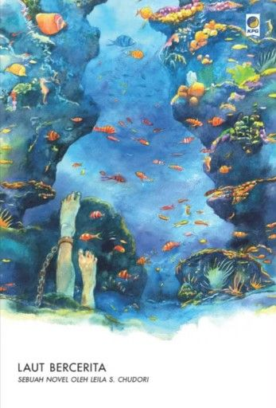
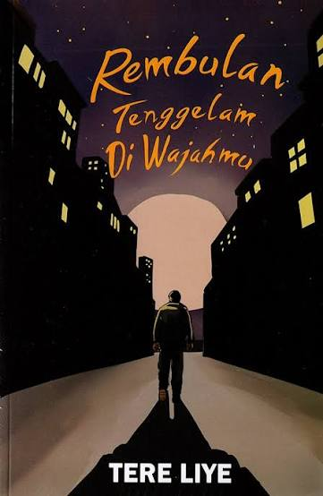
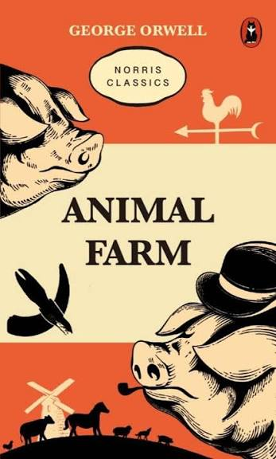

Tentang SayaHalo, saya Rasya. Saya adalah seseorang yang memiliki rasa ingin tahu tinggi dan senang mencoba hal-hal baru, terutama yang berkaitan dengan teknologi dan dunia digital. Saya lebih suka belajar dengan cara langsung mencoba dan membuat sesuatu. Bagi saya, proses mencoba, menemukan kesalahan, lalu memperbaikinya merupakan cara terbaik untuk memahami sesuatu. Saya juga cukup memperhatikan detail, terutama dalam hal tampilan dan hasil akhir dari sesuatu yang saya kerjakan. Saya senang mengeksplorasi ide, mengembangkan kemampuan, dan mengubah konsep menjadi sebuah karya yang bisa digunakan. Saat ini, saya terus belajar dan mengembangkan diri di bidang teknologi dengan harapan dapat menghasilkan karya yang tidak hanya menarik, tetapi juga bermanfaat. Buku FavoritBeberapa buku yang saya sukai:  Laut BerceritaLeila S. Chudori  Rembulan Tenggelam Di WajahmuTere Liye 
Bumi ManusiaPramoedya Ananta Toer  Animal FarmGeorge Orwell HobiBeberapa hal yang saya suka lakukan: MembacaSaya suka membaca buku, terutama buku yang memberikan sudut pandang dan pemikiran baru. Belajar TeknologiSaya senang mempelajari teknologi dan mencoba membuat sesuatu yang baru. EksplorasiSaya suka mengeksplorasi ide, mencoba hal baru, dan belajar dari pengalaman. |
Kontak
Hubungi Saya